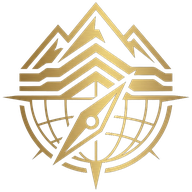

نظام شندل للمسح الميداني الجيولوجي · geologicalfieldsurvey.com
أدخل القياسات الحقلية
قِس مجموعات الانقطاعات ووجه المنحدر بالبوصلة والميزان أو أدخلها يدوياً، وصِف الكتلة الصخرية، ثم اضغط حلّل البيانات.
التحليل الحركي وتحليل التوازن الحدّي
1
المسقط الستيريوغرافي · نصف الكرة السفلي
2
مقطع المنحدر والقوى المؤثرة في الكتلة المنزلقة
3
الخريطة الجيولوجية والمقطع العرضي A–A′
4
رادار الخطر الاتجاهي
5
مخطط تقييم معاملات RMR89
6
العمود الطباقي للمنكشف
ملخص البيانات الحقلية
للمشتركين فقط
سجّل الدخول باسمك ورمز الدخول لاستخدام هذه الأداة. الصفحة خلف هذه النافذة معاينة فقط.